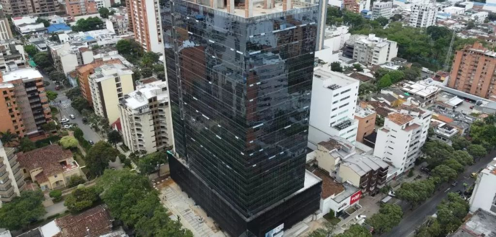
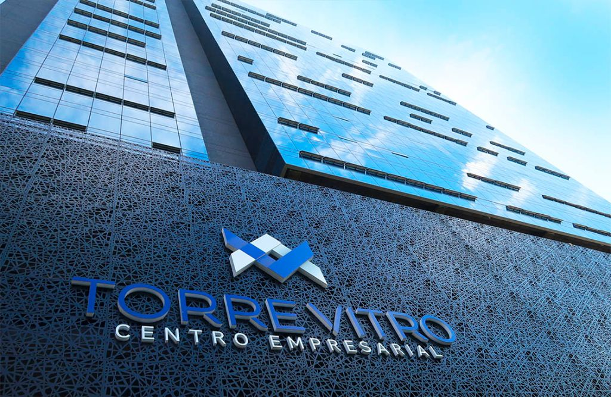
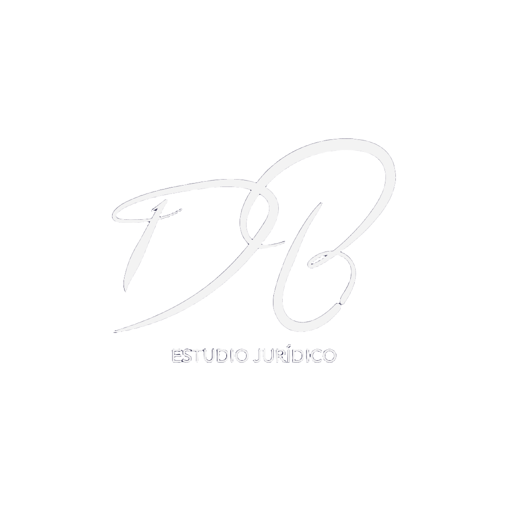

Firma jurídica especializada en derecho de seguros, litigios y asuntos extrajudiciales en Bucaramanga, Santander y el oriente colombiano. Más de 20 años de experiencia respaldando al sector asegurador colombiano.

Somos una firma jurídica con sede principal en la ciudad de Bucaramanga e influencia en el oriente colombiano, constituida legalmente a través de registro en la Cámara de Comercio de Bucaramanga.
Enfocados en la atención de las necesidades del sector asegurador en asuntos litigiosos, ante las distintas especialidades de la jurisdicción, entidades estatales en trámites de sede administrativa y atención de conflictos en escenarios extrajudiciales, siempre buscando el mejor resultado para los intereses de nuestros representados.
Como persona jurídica nos establecimos en abril de 2017, aprovechando la vasta experiencia que por más de 20 años como abogada especialista en el área pudo cosechar nuestra socia fundadora, la Dra. Diana Leslie Blanco.
Nuestra firma ofrece representación jurídica integral en las siguientes ramas, con especial énfasis en el derecho de seguros y su relación con las distintas jurisdicciones.
Representación y defensa para el sector asegurador colombiano: reclamaciones de pólizas, subrogación de seguros, reaseguros, litigios ante jurisdicción civil y comercial en Bucaramanga y Colombia. Especialistas con más de 20 años de experiencia.
Gestión de procesos de responsabilidad civil contractual y extracontractual, daños y perjuicios, responsabilidad médica y profesional, vehicular y de productos. Defensa y reclamación en Santander y Colombia.
Asesoría y litigio en relaciones laborales, accidentes de trabajo, enfermedades profesionales, SARLAFT, liquidaciones y defensa ante la jurisdicción laboral ordinaria.
Procesos ante la jurisdicción contencioso-administrativa: nulidades, reparación directa, acciones populares y de grupo, y trámites ante entidades estatales.
Defensa penal en delitos de cuello blanco, fraudes, estafas al sector asegurador, peculado, falsedad documental y demás conductas punibles relacionadas con el ámbito corporativo.
Sucesiones, bienes, contratos, sociedades y litigios civiles. Cobro ejecutivo, negocios jurídicos y resolución de conflictos en materia mercantil y societaria.
Procesos de divorcio, custodia, alimentos, adopción, liquidación de sociedad conyugal, filiación y demás asuntos de derecho familiar ante los juzgados especializados.
Mediación, conciliación y arbitramento en conflictos civiles, comerciales y laborales. Alternativas efectivas que reducen costos y tiempos para nuestros clientes.
Visas de trabajo, residencia, repatriación, refugio y asuntos migratorios para personas naturales y empresas con presencia internacional o colaboradores extranjeros en Colombia.
Respuestas a las preguntas más frecuentes sobre abogados especializados en seguros en Bucaramanga y Colombia.
El derecho de seguros regula las relaciones entre aseguradoras, intermediarios y asegurados. Necesita un abogado especialista cuando su reclamación es negada, cuando enfrenta un litigio por el valor de una póliza, en casos de subrogación de seguros, o cuando una compañía aseguradora inicia acciones legales. DLB Estudio Jurídico en Bucaramanga cuenta con más de 20 años de experiencia en estas materias.
Sí. Nuestra firma tiene cobertura en todo el oriente colombiano: Santander, Norte de Santander, Boyacá y Arauca, con presencia activa ante los principales juzgados y tribunales de la región. También atendemos asuntos a nivel nacional en derecho de seguros en Colombia.
Ofrecemos: representación de compañías aseguradoras en litigios, gestión de reclamaciones y pólizas, subrogación de seguros, defensa en procesos de responsabilidad civil relacionados con seguros, asesoría en reaseguros, y atención de conflictos extrajudiciales para el sector asegurador colombiano.
DLB Estudio Jurídico tiene su sede principal en Torre Vitro Centro Empresarial, Bucaramanga, Santander, uno de los edificios más modernos e icónicos de la ciudad. Puede contactarnos por teléfono, correo electrónico o WhatsApp para agendar una consulta presencial o virtual.
El derecho de seguros en Colombia es una rama altamente técnica que exige conocimiento profundo del Código de Comercio, la normativa de la Superintendencia Financiera, jurisprudencia actualizada de la Corte Suprema y experiencia práctica en los argumentos de las aseguradoras. Un abogado generalista puede carecer de este conocimiento especializado, lo que compromete el resultado del caso.
La reclamación de seguros es el proceso administrativo ante la aseguradora para cobrar una póliza. La subrogación ocurre cuando la aseguradora, al pagar al asegurado, adquiere el derecho de repetir contra el tercero responsable del siniestro. El litigio es el proceso judicial cuando la negociación extrajudicial fracasa. DLB Estudio Jurídico en Bucaramanga maneja los tres escenarios con experticia comprobada.

"El derecho no es solo conocimiento técnico; es el arte de entender las necesidades del cliente y traducirlas en estrategias que protejan sus intereses de manera efectiva y oportuna."
Cada caso es tratado con una metodología estructurada que garantiza análisis profundo, estrategia sólida y comunicación permanente con nuestros clientes.
Evaluación integral del caso: análisis de hechos, pruebas y normativa aplicable para definir la viabilidad y estrategia más adecuada.
Diseño de una ruta jurídica ajustada a los objetivos del cliente, considerando tiempos, costos y probabilidades de éxito en cada instancia.
Actuación diligente ante juzgados, tribunales, entidades estatales y escenarios extrajudiciales, con seguimiento permanente al proceso.
Informes periódicos, comunicación transparente y acompañamiento hasta la ejecución efectiva de los fallos o acuerdos obtenidos.
Nuestra firma trabaja de la mano con los actores más relevantes del sector asegurador y empresarial colombiano.
Representación en litigios, subrogación, reclamaciones y consultoría para empresas del sector asegurador nacional e internacional.
Asesoría jurídica integral para medianas y grandes empresas en temas contractuales, laborales, corporativos y de cumplimiento.
Tramitación de asuntos en sede administrativa, contratos con el Estado, responsabilidad contractual y litigios contencioso-administrativos.
Defensa de derechos e intereses de personas en asuntos civiles, penales, de familia, laborales y migratorios con atención personalizada.
En DLB Estudio Jurídico combinamos experiencia, tecnología y un profundo conocimiento del sistema judicial colombiano para ofrecer resultados superiores a nuestros clientes.
Solicitar consultaDominio profundo del derecho de seguros y su interacción con todas las ramas jurídicas del sistema colombiano.
Presencia activa en los principales juzgados y tribunales del oriente colombiano y Bucaramanga.
Tiempos de respuesta ágiles y seguimiento permanente en cada etapa procesal y extrajudicial.
Informes detallados, honorarios claros y comunicación honesta sobre el estado y perspectivas de cada proceso.
Socia Fundadora & Directora
Abogada especialista en derecho de seguros con más de 20 años de trayectoria profesional. Su experiencia abarca la representación de compañías aseguradoras, manejo de procesos civiles, laborales, penales y contencioso-administrativos con resultados destacados a nivel regional y nacional.
Amplio conocimiento del sistema judicial colombiano y profunda comprensión de las necesidades del sector asegurador, lo que le permite diseñar estrategias jurídicas efectivas y orientadas al resultado.
Colombia · Oriente
Nuestra firma opera con representación activa ante los juzgados, tribunales y entidades administrativas de la región, garantizando presencia directa en los procesos de nuestros clientes.
Agenda una consulta con nuestros especialistas. Cada caso merece atención personalizada y la estrategia adecuada para proteger sus intereses.
Cuéntenos su caso y nos comunicaremos a la brevedad.